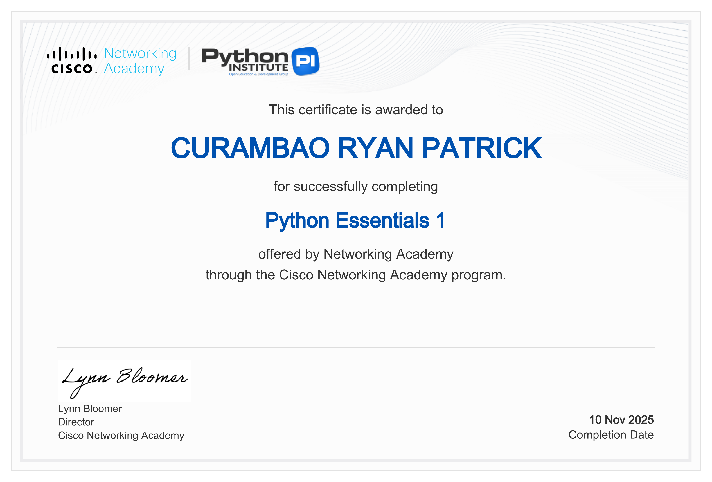
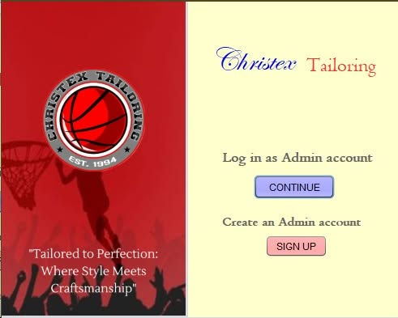
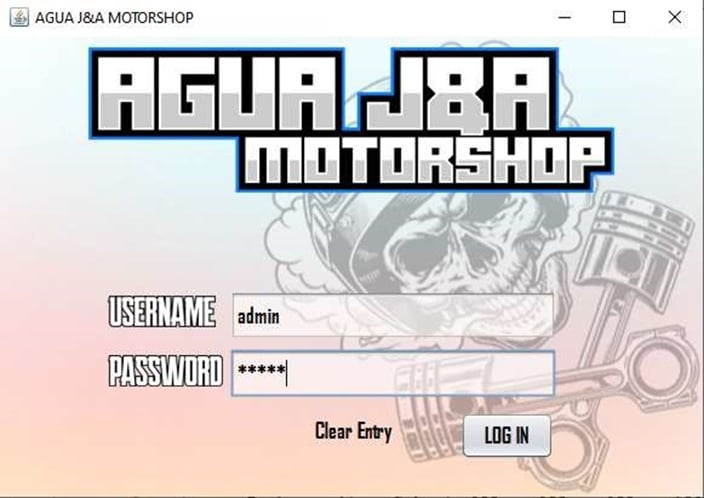
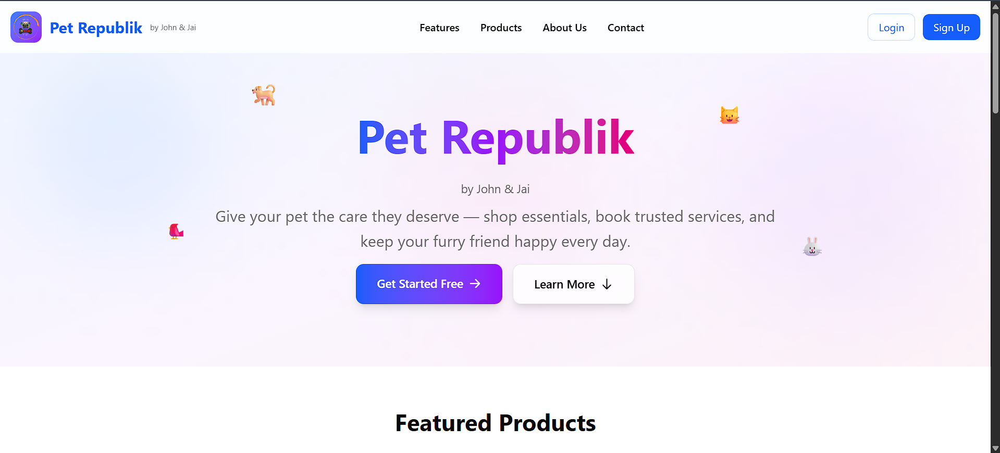

Certificates


Passionate about developing modern web solutions, designing user-friendly interfaces, and building systems that solve real-world problems.
I am a dedicated and motivated Information Systems student with hands-on experience in software development, system design, and web development acquired throughout my academic journey.
During my first year, I developed a Point of Sale (POS) and Inventory Management System as part of our Programming 2 course, which strengthened my foundation in programming and database management. In my second year, Iworked on an Information System with Inventory Management features and participated in developing a startup prototype, enhancing my skills in system analysis, design, and teamwork.
In my third year, I created a promotional website and contributed to the development of a capstone project and research paper, further improving my web development, problem-solving, and research capabilities. During my fourth year, I successfully completed our capstone project and gained valuable professional experience as an intern at Panabo City Hall, where I assisted with administrative and technical tasks in a real-world work environment.
I am passionate about technology, continuous learning, and creating innovative solutions that improve efficiency and user experience. I am eager to apply my knowledge and skills in the IT industry while continuing to grow as a technology professional.

POS with Inventory Management Platform for The Christex Tailoring Business Operations.

Information and Inventory Management System for the Motor Parts Shop.

Online Ordering and Booking Appointment System for John & Jai Company in Panabo City.

Phone
+63 915 844 5345Location
Panabo City